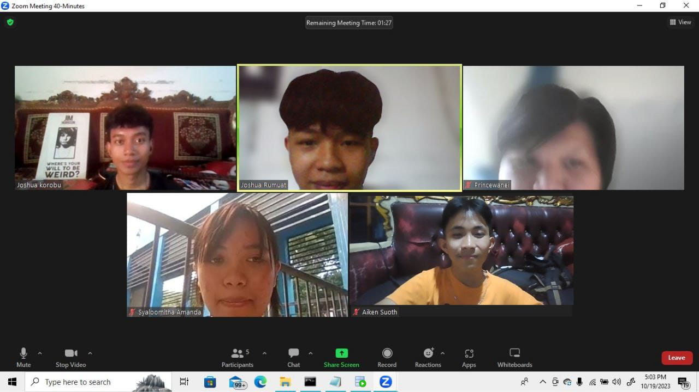
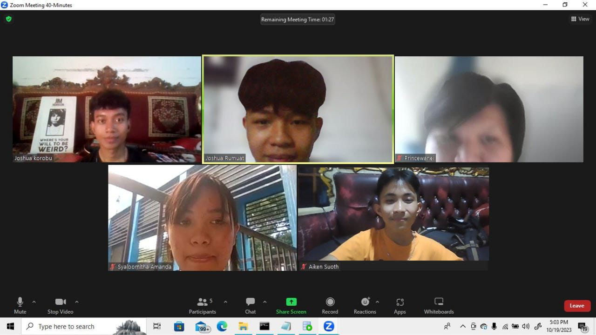

Olahraga dan Teknologi: Membangun Masa Depan
Artikel ini membahas tentang bagaimana teknologi, khususnya dalam bidang olahraga, sedang mengubah cara kita berolahraga.membahas tentang bagaimana teknologi seperti wearable devices dan sistem pelacakan otomatis telah membantu atlet untuk mengumpulkan dan menganalisis data mereka dengan lebih efisien, serta bagaimana ini telah mempengaruhi cara pelatih dan atlet merencanakan dan mengevaluasi kegiatan olahraga.